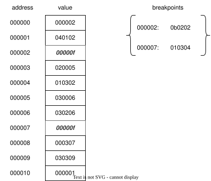

26 A Debugger
- Interactive programs can be tested by simulating input and recording output.
- Testing interactive programs is easier if their inputs and outputs can easily be replaced with mock objects.
- Debuggers usually implement breakpoints by temporarily replacing actual instructions with special ones.
- Using lookup tables for function or method dispatch makes programs easier to extend.
We have finally come to another of the questions that sparked this book: how does a debugger work? Debuggers are as much a part of good programmers’ lives as version control but are taught far less often (in part, we believe, because it’s harder to create homework questions for them). This chapter builds a simple single-stepping debugger for the virtual machine of Chapter 25 and shows how we can test interactive applications. If you would like to go further and (much) deeper, please have a look at Sy Brand's tutorial.
26.1 One Step at a Time
Before we start work, let’s consolidate and reorganize the code in our virtual machine. The methods all work as they did before, but we’ve made a few changes to allow for future growth. The first is to pass an output stream to the constructor, which by default will be sys.stdout:
We then replace every print statement with a call to new method called write. For example, the “print register” instruction calls self.write:
For now, write just prints things to whatever output stream the virtual machine (VM) was given:
Our virtual machine now loads a program and runs it to completion, so it’s either running or finished. We want to add a third state for single-step execution, so let’s start by adding an enumeration to architecture.py:
class VMState(Enum):
"""Virtual machine states."""
FINISHED = 0
STEPPING = 1
RUNNING = 2We could use strings to keep track of states, but as soon as there are more than two there are likely to be many, and having them spelled out makes it easier for the next person to find out what they can be.
We are now in a better position to move forward, so we derive a new class from our refactored VM:
class VirtualMachineStep(VirtualMachineBase):(Again, if we were writing this code under normal circumstances, we would enhance the existing class, but since we want to keep several versions around for teaching, we derive and extend.)
The old run method kept going until the program finished. The new run method is necessarily more complicated. The VM is initially in the STEPPING state (because if we start it in the RUNNING state, we would never have an opportunity to interact with it to change its state). As long as the program isn’t finished, we fetch, decode, and execute the next instruction as usual, but we stop after each one if we’re single-stepping:
The interaction method needs to handle several cases:
The user enters an empty line (i.e., presses return), in which case it loops around and waits for something else.
The user asks to disassemble the current instruction or show the contents of memory, in which case it does that and loops around.
The user wants to quit, so
interactchanges the VM’s state toFINISHED.The user wants to run the rest of the program without stopping, so
interactchanges VM’s state toRUNNING.The user wants to execute a single step, in which case the method breaks out of the loop without changing the VM’s state.
runwill then see that the VM is still in single-stepping mode and will execute a single instruction.
The method that disassembles an instruction to show us what we’re about to do checks a reverse lookup table to create a printable representation of an instruction and its operands:
We build the reverse lookup table from the OPS table in architecture.py so that it’s always in sync with the table we’re using to construct operations (Figure 26.1):
OPS_LOOKUP = {value["code"]: key for key, value in OPS.items()}If we wrote the reverse lookup table ourselves, sooner or later we’d forget to update it when updating the forward lookup table.
But there’s a more important change in this new virtual machine. It doesn’t use Python’s built-in input function to get input from the user—or rather, it does, but only by default. The constructor for our single-stepping VM is:
and its read method is:
As with the write method introduced in the previous section, adding this wrapper method will help us with testing, which is our next topic.
26.2 Testing
Our debugger is an interactive application that waits for input from the user, does something that may or may not print output, then waits again. The waiting is a problem for tools like pytest, which expect the function being tested to run to completion after being launched.
To make our single-stepping VM testable, we have to give it input when it wants some and capture its output for later inspection. We had a similar problem when testing the web server of Chapter 21 and the editor of Chapter 24, and our solution is similar: we will replace input and print with mock objects.
As shown earlier, our VM uses an object with a write method to produce output. We can define a class which provides this method but saves messages in a list for later inspection instead of printing them:
class Writer:
def __init__(self):
self.seen = []
def write(self, *args):
self.seen.extend(args)Similarly, our VM gets input from a function that takes a prompt as an argument and returns whatever the user typed. We can define a class with a __call__ method which acts like such a function but which returns strings from a list instead of waiting for the user:
class Reader:
def __init__(self, *args):
self.commands = args
self.index = 0
def __call__(self, prompt):
assert self.index < len(self.commands)
self.index += 1
return self.commands[self.index - 1]With these in hand, we can write a helper function that compiles a program, creates a virtual machine, and runs it with a mock reader and a mock writer:
def execute(source, reader, writer):
program = Assembler().assemble(source.split("\n"), False)
vm = VM(reader, writer)
vm.initialize(program)
vm.run()We can now write tests, like this one for the “disassemble” command:
def test_disassemble():
source = """
hlt
"""
reader = Reader("d", "q")
writer = Writer()
execute(source, reader, writer)
assert writer.seen == ["hlt | 0 | 0\n"]Line by line, it:
Creates the program to test (which in this case consists of a single
hltinstruction).Creates a
Readerthat will supply the commands"d"(for “disassemble”) and"q"(for “quit”) in that order.Creates a
Writerto capture the program’s output.Runs the program in a fresh VM with that reader and writer.
Checks that the output captured in the writer is correct.
Defining two classes and a helper function to test a one-line program may seem like a lot of work, but we’re not testing the one-line program or the VM—we’re testing the debugger. For example, the close below:
Defines a multiline string that loads 55 into R0, prints it, and then loads 65 into the same register to print before halting.
Creates a
Readerthat issues three"s"(single-step) commands and a"q"(quit) command. Note that this isn’t enough to reach the second print command.Executes the program.
Checks that the
Writerhas only recorded one line of output, not two.
def test_print_two_values():
source = """
ldc R0 55
prr R0
ldc R0 65
prr R0
hlt
"""
reader = Reader("s", "s", "s", "q")
writer = Writer()
execute(source, reader, writer)
assert writer.seen == [
"000037\n"
]This test actually uncovered a bug in an earlier version of the debugger in which it would always execute one more instruction when told to quit. Interactive testing might have spotted that, but it could easily reappear; this test will warn us if it does.
Our Reader and Writer aren’t good for much beyond testing our VM, but there are other tools that can simulate input and output for a wider range of applications. Expect (which can be used through Python’s pexpect module) is often used to script command-line applications as well as to test them. Selenium and Cypress do the same for browser-based applications: programmers can use them to simulate mouse clicks, window resizing, and other events, then check the contents of the page that the application produces in response. They are all more difficult to set up and use than a simple test that 1+1 is 2, but that’s because the things they do are genuinely complex. Designing applications with testing in mind—for example, routing all input and output through a single method each—helps reduce that complexity.
26.3 Extensibility
We are going to add one more big feature to our debugger, but before we do, let’s do some refactoring. First, we move every interactive operation into a method of its own that does something and then returns True if the debugger is supposed to stay in interactive mode and False if interaction is over. The method for showing the contents of memory is:
while the one for advancing one step is:
and so on. Once that’s done, we modify interact to choose operations from a lookup table called self.handlers. Its keys are the commands typed by the user, and its values are the operation methods we just created:
Finally, we extend the virtual machine’s constructor to build the required lookup table. For convenience, we register the methods under both single-letter keys and longer command names:
As in previous chapters, creating a lookup table like this makes the class easier to extend. If we want to add another command (which we will do in the next section) we just add a method to perform the operation and register it in the lookup table. So long as new commands don’t need anything more than the address of the current instruction, we never need to modify interact again.
26.4 Breakpoints
Suppose we suspect there’s a bug in our program that only occurs after several thousand lines of code have been executed. We would have to be pretty desperate to single-step through all of that even once, much less dozens of times as we’re exploring new ideas or trying new fixes. Instead, we want to set a breakpoint to tell the computer to stop at a particular location and drop us into the debugger. We might even use a conditional breakpoint that would only stop if, for example, the variable x was zero at that point, but we’ll leave that for the exercises.
The easiest way to implement breakpoints would be to have the VM store their addresses in a set. We would then modify run to check that set each time it was supposed to fetch a new instruction, and stop if it was at one of those addresses (Figure 26.2).
An alternative design is to add a new instruction to our architecture called brk. When the user sets a breakpoint at some address, we replace the instruction at that address with a breakpoint instruction and store the original instruction in a lookup table. If the user later clears the breakpoint, we copy the original instruction back into place, and if the VM encounters a breakpoint instruction while it is running, it drops into interactive mode (Figure 26.3).

Putting breakpoints inline is more complicated than storing them beside the program, but it is how debuggers for low-level languages like C actually work. It also makes the virtual machine more efficient: instead of spending a few (actual) instructions checking a breakpoint table every time we execute an instruction, we only pay a price when we actually encounter a breakpoint. The difference isn’t important in our little toy, but little savings like this add up quickly in a real interpreter for a language like Python or JavaScript.
The first step in implementing breakpoints is to add two more commands to the lookup table we created in the previous section:
To add a breakpoint, we copy the instruction at the given address into the dictionary self.breaks and replace it with a breakpoint instruction:
Notice that if there’s already a breakpoint in place, we don’t do anything. We also return True to tell interact to wait for another command from the user.
Clearing a breakpoint is just as easy:
We also update show to display any breakpoints that have been set:
The implementation first calls the parent’s show method to display what we’ve seen so far before adding more information. Extending methods by upcalling this way saves typing and ensures that changes in the parent class automatically show up in the child class.
The final step is to change run so that the VM actually stops at a breakpoint:
The logic here is relatively straightforward. If the instruction is a breakpoint, the VM uses the original instruction from the breakpoint lookup table, then gives the user a chance to interact before executing that original instruction. Otherwise, the VM interacts with the user if it is in single-stepping mode and then carries on as before.
We can test our new-and-improved VM using the tools developed earlier in this chapter, but even before we do that, the changes to run tell us that we should rethink some of our design. Using a lookup table for interactive commands allowed us to add commands without modifying interact; another lookup table would enable us to add new instructions without having to modify run. We will explore this in the exercises.
26.5 Summary
Figure 26.4 summarizes the key ideas in this chapter.

26.6 Exercises
26.6.1 Show Memory Range
Modify the debugger so that if the user provides a single address to the "memory" command, the debugger shows the value at that address. If the user provides two addresses, on the other hand, the debugger shows all the memory between those addresses.
How did this change the way command lookup and execution work?
Is your solution general enough to handle likely future changes without rewriting?
26.6.2 Breakpoint Addresses
Modify the debugger so that if the user provides a single address to the "break" or "clear" command, it sets or clears the breakpoint at that address. Did this feature require any changes beyond those made for the previous exercise?
26.6.3 Command Completion
Modify the debugger to recognize commands based on any number of distinct leading characters. For example, any of "m", "me", "mem", and so on should trigger the _do_memory method. Programmers should not have to specify all these options themselves; instead, they should be able to specify the full command name and the method it corresponds to, and the VM’s constructor should take care of the rest.
26.6.4 Conditional Breakpoints
Modify the debugger so that users can specify conditions for breakpoints, i.e., can specify that the VM should only stop at a location if R0 contains zero or if the value at a particular location in memory is greater than 3. (This exercise is potentially very large; you may restrict the kinds of conditions the user can set to make the problem more tractable, or explore ways of using eval to support the general case.)
26.6.5 Watchpoints
Modify the debugger and VM so that the user can create watchpoints, i.e., can specify that the debugger should halt the VM when the value at a particular address changes. For example, if the user specifies a watchpoint for address 0x0010, then the VM automatically halts whenever a new value is stored at that location.
26.6.6 Instruction Lookup
Modify the virtual machine so that execute looks up instructions in a table in the same way as debugger commands.
26.6.7 Changing Memory
Modify the debugger so that users can change the values in registers or at particular addresses in memory while the program is running.
26.6.8 Displaying Source
Modify the debugger so that when the debugger is displaying memory, it shows the assembly code instructions corresponding to particular addresses as well as the numeric codes.
How can the debugger distinguish between locations that contain instructions and locations that contain data?
26.6.9 Interleaving Testing
Modify the testing tools developed in this chapter so that users can specify input and output as they would naturally occur, i.e., can specify one or more commands, then the output expected from those commands, then some more input and the corresponding output, and so on.
26.6.10 Pattern Matching in Tests
Tools like Expect allow programmers to match output with regular expressions. Modify the testing tools developed in this chapter to do that as well.
When is this useful? When is it potentially dangerous?